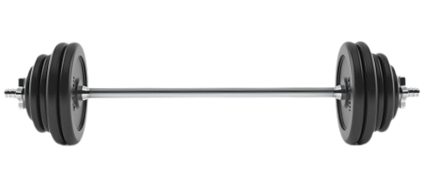
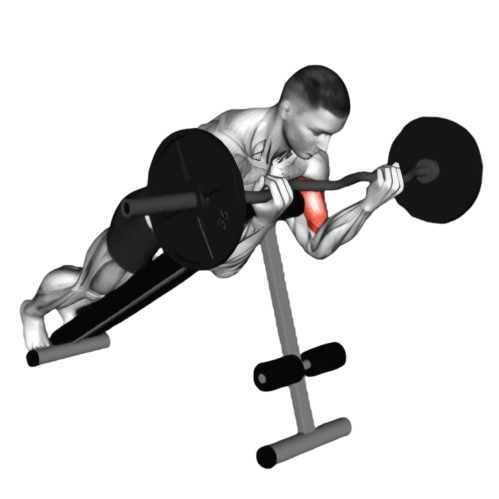
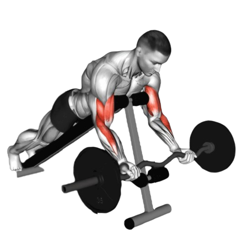

스파이더 바벨 컬

- 상체를 기울인 상태로 고정할 수 있는 벤치(스파이더 컬 벤치 또는 프리처 벤치)를 준비한다. 벤치의 각도는 45도 정도가 적당하다.
- 벤치에 가슴을 대고 엎드린다.
- 팔꿈치를 고정하고 이두근을 사용하여 바벨을 천천히 위로 들어 올린다. 바벨을 올리는 동안 팔꿈치가 벤치에서 떨어지지 않도록 주의한다.
- 바벨이 어깨 높이에 도달하면 이두근을 최대한 수축한 상태로 잠시 멈춘다.
- 이때 호흡은 뱉는다.
- 천천히 바벨을 원래 위치로 내리며 이두근의 이완을 느낍니다. 팔을 완전히 펴지 않고 손바닥이 위로 향하도록 한다.
- 이때 호흡은 마신다.

주의사항
- 바벨을 들어 올릴 때 상체나 팔의 반동을 사용하지 않도록 주의한다.
- 팔꿈치가 움직이지 않도록 고정한다.
- 지나치게 무거운 중량은 잘못된 자세를 유발할 수 있어 부상의 원인이 된다.
운동부위 및 효과
- 상완이두근
- 이두근의 모양을 만들고, 탄탄한 팔 라인을 형성하는 데 효과적이다.